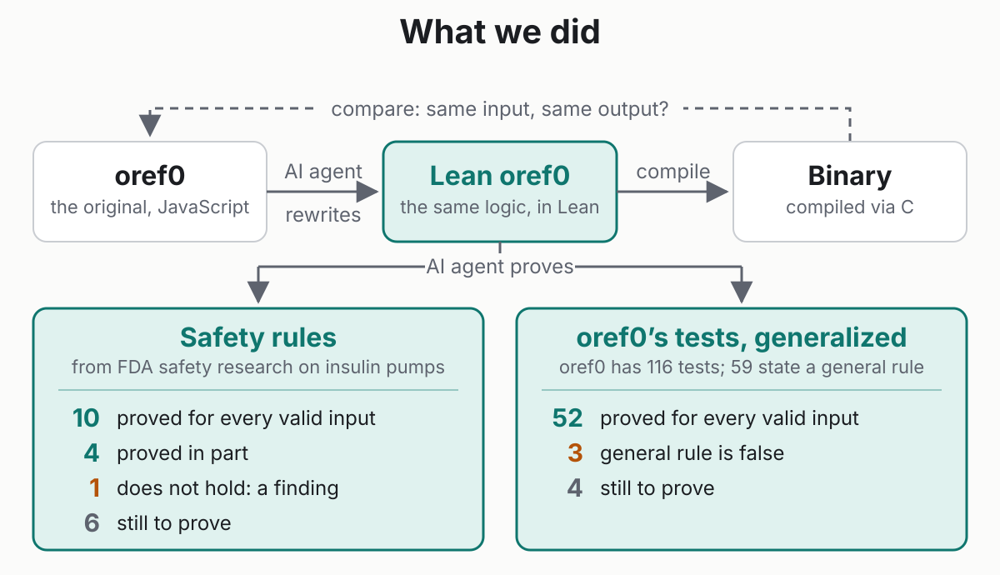
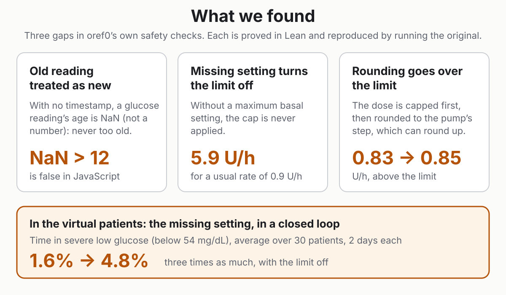
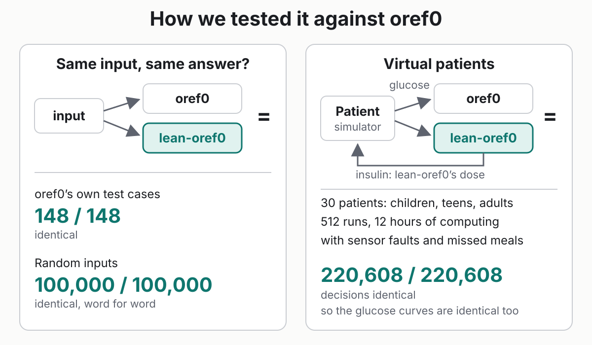
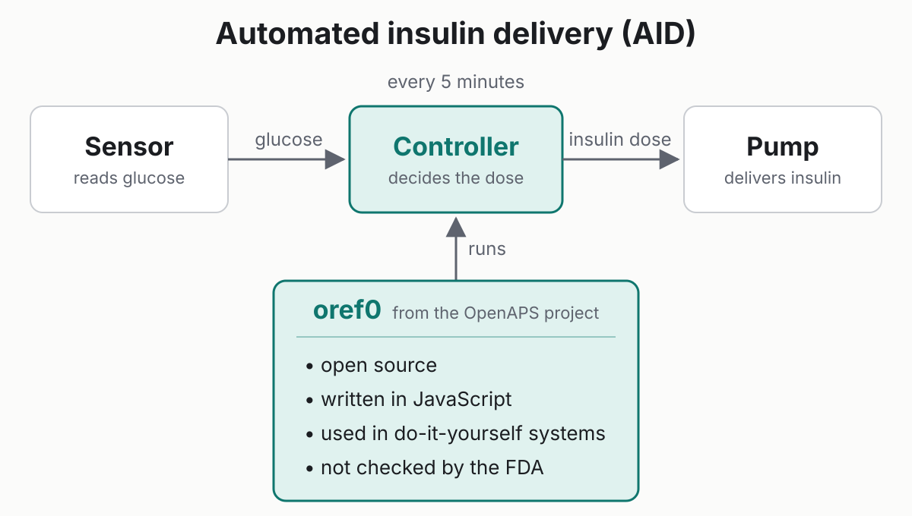

oref0 is open-source software that decides insulin doses for people with type 1 diabetes. With an AI agent, we rewrote it in Lean 4 and proved safety rules from FDA research on insulin pumps. We tested the compiled Lean program against the original on 100,000 cases and 30 virtual patients.
Three steps, all carried out by an AI agent and checked by a computer.

Function by function, so every piece of the Lean code matches a piece of the original. We call the Lean version lean-oref0. It compiles via C to a binary, aid-lean, that takes the same inputs and gives the same kind of answer as the original.
We wrote down 23 safety rules, such as "never give more than the maximum rate" and "give no insulin when glucose is low". Most are limits oref0 already tries to enforce, and each is backed by FDA safety research on insulin pumps. Then we proved that the Lean version follows 10 of the rules for every input with consistent settings, and 4 more in part. One rule does not hold (see the findings). Of the other 8, 6 are still to be proved, and 2 are covered by how the program is built and by testing.
The agent also generalized oref0's own tests. oref0 has 116 tests; 59 of them state a general rule, such as "no insulin when glucose is low", rather than one exact number. 52 of those are now proved for every valid input, and 7 are still to prove.
We ran the compiled Lean program and the original JavaScript side by side on the same inputs. On oref0's own test cases, 148 of 148 answers are identical. On 100,000 randomly generated cases, all 100,000 answers are identical word for word. With 30 virtual patients, all 220,608 decisions are identical.
The difference this project is about.
Glucose 75 mg/dL and falling → no insulin.
Checks one situation. oref0 has 116 tests like this.
For every glucose reading below the low threshold that is not rising → no insulin.
Covers every situation at once, and a computer checks the proof.
59 of oref0's tests state a general rule. We turned 52 of them into proofs like this; 7 are still to prove. Most of the other tests are switched off upstream or check one exact number with no general rule behind it.
Problems in oref0 0.7.1 that its own tests did not catch. Each one is proved in Lean and reproduced by running the original.

If a glucose reading has no timestamp, its age is NaN ("not a number"). In JavaScript, NaN > 12 is false, so the reading never counts as stale and oref0 doses on it.
How we found it. The agent noticed it while rewriting the code in Lean and kept it, to copy oref0 faithfully. An independent review then recognised it as a safety problem: with no date, oref0 sets its maximum rate, 3.5 U/h, for a reading it would refuse if it were dated an hour ago.
If the maximum basal setting is missing, the safety limit is computed as min(…, NaN), which is NaN. Every comparison with NaN is false, so the cap never applies.
How we found it. The independent review found it while checking the safety rule about the maximum rate.
oref0 caps the dose and then rounds it to the nearest pump step. A limit of 0.83 U/h becomes 0.85 U/h, over the limit by at most half a step.
How we found it. From the FDA-based safety rule "the dose never exceeds the maximum safe rate": the Lean proof failed and produced the counterexample 0.83 → 0.85, which we then reproduced in JavaScript. It also shows up in the 100,000 random tests, where one limit of 4.44 U/h gives 4.45 U/h.
Severity is our estimate. Medium: a large overdose is possible, but the apps normally supply the data. Low: the overshoot is at most half a pump step (0.025 U/h). lean-oref0 keeps all three on purpose, so that it decides exactly like the original; the optional --safe mode refuses inputs with an undated reading or a missing setting. Proved fixes are planned.
Proved for every possible input, as long as the user's settings make sense.
Rounding can go over by a tiny amount (see What we found).
If glucose is low and not rising, lean-oref0 gives no insulin.
Once the insulin in the body reaches the user's maximum, lean-oref0 gives no more than the normal rate.
Error codes, noisy or old readings never increase insulin. Readings with no date slip through (see What we found).
Tested instead: identical to oref0 on all 51 of its test cases.
Proofs show what the Lean version guarantees. Tests show it behaves like the original: we ran the compiled Lean program and the original JavaScript on the same inputs.

Including 2 that differed while the Lean version computed with exact fractions instead of JavaScript's rounded numbers.
We deliberately broke the Lean code in 24 ways, such as removing a safety cap. Every change made a proof or a test fail.
| Identical output, word for word | 100,000 |
| Any difference | 0 |
These cases test the dose decision. The insulin still active in the body is one of its inputs, so that calculation is checked separately, on oref0's 51 test cases (all identical). The Lean version rounds every arithmetic operation exactly as JavaScript does, except the exponential function (see Details). An earlier version computed with exact fractions instead: on the same 100,000 cases it gave identical output in 83,089 and a different insulin rate in 82, usually slightly more insulin.
30 simulated patients (adults, adolescents and children), each over 2 to 7 days with meals, in a closed loop. 512 runs in all, 12 hours of computing. In the runs driven by lean-oref0, oref0 decided at every 5-minute step on the same glucose history, and all 220,608 decisions and insulin-on-board values were identical. Without faults, time in range (70–180 mg/dL) was 88.8%, against 83.2% for simglucose's standard basal-bolus controller. With the maximum basal setting removed (the second finding), time below 54 mg/dL rose from 1.6% to 4.8%, the same with oref0 and with lean-oref0.
Virtual patients: simglucose, an open reimplementation of the 2008 UVA/Padova simulator, not accepted by the FDA as evidence. The profiles are derived from the simulator, not set by a clinician. Numbers from sim/run_all.py; the run data and full report are in preparation.
The project covers only the part that decides the dose: glucose readings in, an insulin amount out.

What the results do not show.
Numbers from scripts/report.js. Full write-up: REPORT, FINDINGS, REQUIREMENTS, TRACEABILITY.
sorry, standard axioms only88cf032): determine-basal, setTempBasal, round_basal, IOB, basal lookup, glucose status and meal history. Values are exact rationals rounded after every operation to the nearest IEEE-754 double, as in JavaScript, with JavaScript's NaN semantics; no Float in the core.native_decide, so they trust the compiler, while the safety theorems are kernel-checked. oref0's tests never reach predictions, COB, UAM or SMB; for those, agreement rests on differential testing: 100,000 random valid inputs and 220,608 decisions with virtual patients, all identical.aid-lean determine-basal has the same command-line interface and JSON format as oref0-determine-basal; --safe rejects inputs with an undated glucose reading, a missing maximum basal setting or carbs with no meal time; aid_step is exported for C.git clone https://github.com/Beneficial-AI-Foundation/LeanAID.git
cd LeanAID
lake build # transcription, all proofs, conformance checks
lake test # build + aid-lean selftest + forbidden-construct check
.lake/build/bin/aid-lean selftest # replays oref0's test casesComparing with the original JavaScript needs oref0 at commit 88cf032 and Node; see REPORT.